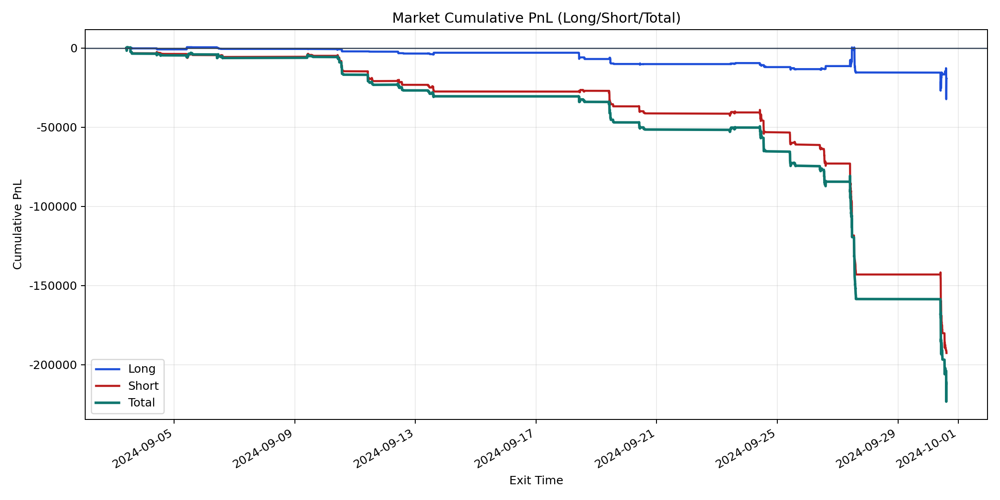
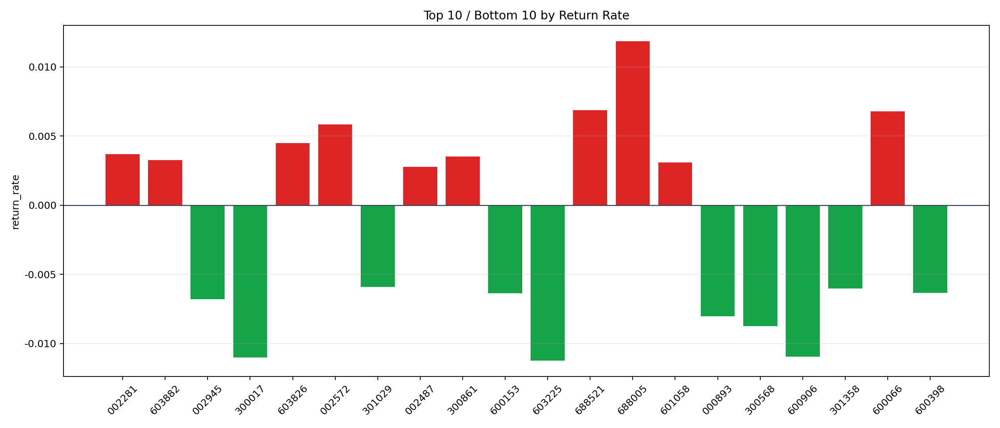

| repo_root | /home/haoranyou/data/output/dynamic_AUM_TAKER_index500 |
|---|---|
| period_months | 1 |
| period_label | 2024-09-03_to_2024-09-30 |
| start_time | 2024-09-03 09:54:38 |
| end_time | 2024-09-30 14:38:12 |
| n_trades | 6029 |
| n_symbols | 157 |
| total_pnl | -211687.6916000005 |
| long_total_pnl | -19115.292399999304 |
| short_total_pnl | -192572.39920000118 |
| total_entry_notional | 107972115.0 |
| long_entry_notional | 28900859.0 |
| short_entry_notional | 79071256.00000001 |
| total_return_rate | -0.0019605774287185214 |
| long_return_rate | -0.0006614091435828708 |
| short_return_rate | -0.002435428611378086 |
| top_symbols_by_return | ["688005", "688521", "600066", "002572", "603826", "002281", "300861", "603882", "601058", "002487"] |
| bottom_symbols_by_return | ["603225", "300017", "600906", "300568", "000893", "002945", "600153", "600398", "301358", "301029"] |

